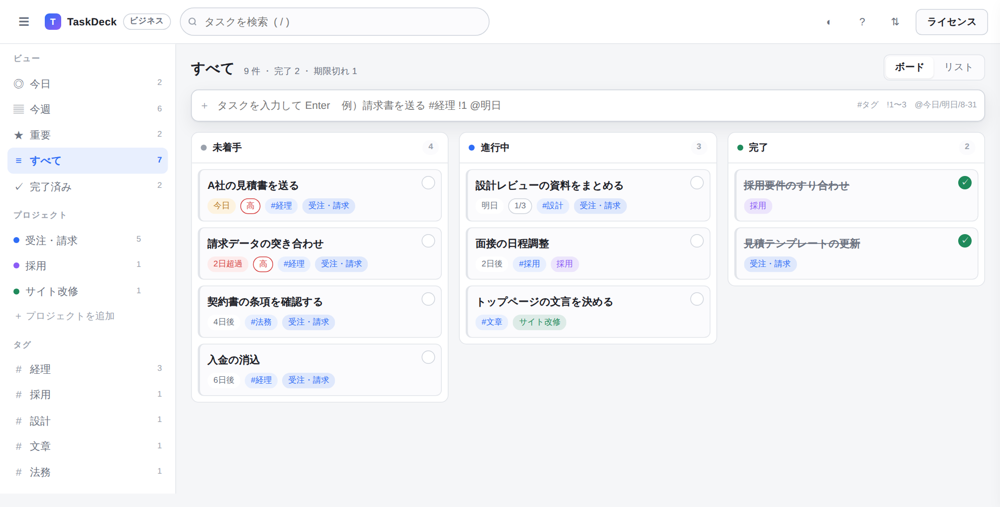
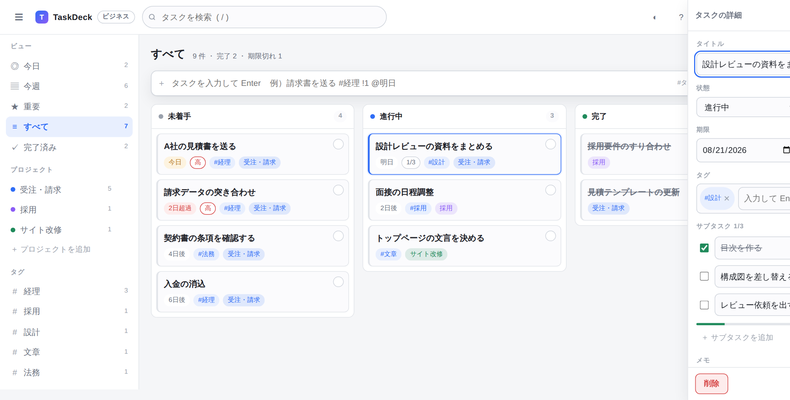
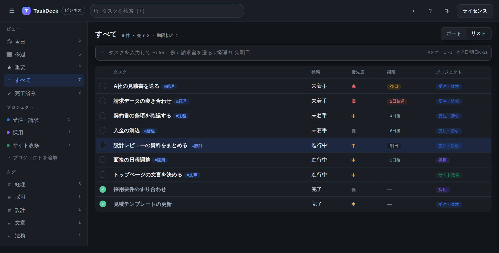
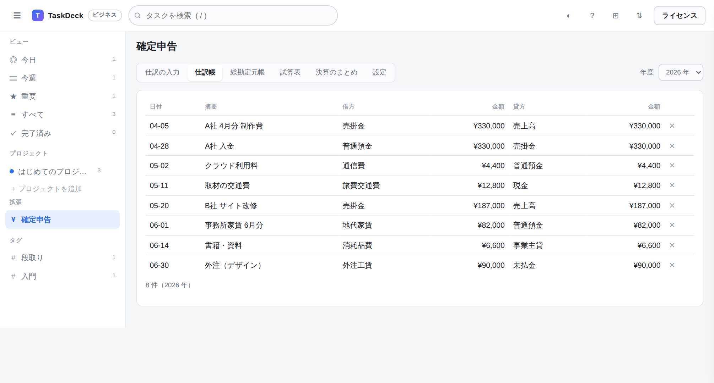

1 行打つだけで、期限もタグも決まる
入力欄に 請求書を送る #経理 !1 @明日 と打って Enter。
それだけでタグ・優先度・期限が付いたタスクになります。マウスに持ち替える必要はありません。
- #タグ で分類、!1〜3 で優先度、@今日 @明日 @金曜 @8-31 で期限
- キーボードだけで、選ぶ・開く・完了にするまで完結
- ドラッグで「未着手 → 進行中 → 完了」へ
TaskDeck は HTML ファイル 1 つで動くタスク管理ツールです。
インストールもアカウント登録も不要。通信は一切行わず、データはあなたの端末から出ません。
評価版はタスク 30 件まで。機能の制限はありません。ライセンスキーを入れれば、そのまま製品版になります。

情報を外に出せない。管理部門の承認が下りない。人数分の月額が重い。 TaskDeck は、その 3 つを同時に解きます。
士業・医療・自治体・製造の現場では、案件名すらクラウドに載せられないことがあります。TaskDeck は通信しません。書き込んだ内容は端末の中に留まります。
1人あたり月1,000円でも、10人・3年なら36万円。TaskDeck は買い切りです。使い続けても追加の請求は発生しません。
権限がなくてインストールできない端末でも、ファイルを開くだけなら動きます。管理者に頼む前に、まず自分で試せます。
機能を増やすより、迷わず使えることを優先しました。説明書を読まなくても、はじめの1分で書き込みはじめられます。
入力欄に 請求書を送る #経理 !1 @明日 と打って Enter。
それだけでタグ・優先度・期限が付いたタスクになります。マウスに持ち替える必要はありません。


今日やることはボードで、報告や棚卸しはリストで。見出しを押せば期限順・優先度順に並び替わります。 暗い部屋のためのダークテーマも入っています。
案件ごとに色分けし、手順はサブタスクに割ります。進み具合は 2/5 のようにカードへ出ます。
データはいつでも書き出せます。CSV は Excel でそのまま開けるので、報告書づくりにも使えます。
削除したタスクは、画面下の「元に戻す」で復帰します。保存ボタンはありません。打った先から保存されます。
本体はタスク管理だけに絞ってあります。使わない機能で画面が重くなることはありません。 必要な仕事が出てきたら、拡張パッケージを 1 つ買って読み込むだけで足せます。
複式簿記で仕訳を記録すると、総勘定元帳・試算表・損益計算書・貸借対照表まで自動で集計します。 青色申告の決算書に転記できる形でまとまります。
¥6,800（税込・買い切り） 本体をお持ちの方向けのオプションです。
このオプションを購入する
拡張パッケージには販売元の電子署名が入っています。署名のないものや、途中で書き換えられたものは読み込まれません。
拡張は一覧から停止・取り外しができます。外したあとの本体は、拡張を入れる前とまったく同じ動きに戻ります。
請求書作成、経費の写真メモ、勤怠記録など、同じ仕組みの上に順次追加していく予定です。本体を買い直す必要はありません。
| TaskDeck | クラウド型サービス | 自前サーバー型 | |
|---|---|---|---|
| データの置き場所 | 利用者の端末の中だけ | 提供会社のサーバー | 自社サーバー |
| 費用 | 買い切り | 1人あたり月額 | サーバー費＋運用の手間 |
| 導入にかかる作業 | ファイルを開くだけ | アカウント作成・招待 | 構築・保守 |
| インターネット | 不要（機内でも動く） | 必須 | 社内網が必要 |
| 提供終了したら | 手元のファイルは動き続ける | 使えなくなる | 自社で保守を継続 |
| 複数人での同時共有 | 向きません（1人1ファイル） | 得意 | 得意 |
TaskDeck は「1人が自分の仕事を捌く」ための道具です。 チーム全員で同じ画面をリアルタイムに共有したい場合は、クラウド型のほうが適しています。正直にお伝えしておきます。
購入後 1 年間は、更新版を無料でお届けします。1 年を過ぎても、お使いのバージョンはそのまま使い続けられます。
| オプション（拡張パッケージ） | 価格 | 内容 |
|---|---|---|
| 確定申告データ管理 | ¥6,800 | 複式簿記の記帳、総勘定元帳・試算表・決算のまとめ、CSV書き出し |
オプションは本体とは別売りです。本体をお持ちでない場合は、本体とあわせてご購入ください。
決済後、ダウンロードURLとライセンスキーをメールでお送りします（通常は数分以内、遅くとも1営業日以内）。
動作しない場合は、購入後 14 日以内にご連絡ください。修正版の提供、または返金にて対応します。
請求書・見積書が必要な場合は〔サポート窓口のメールアドレス〕までご連絡ください。
していません。TaskDeck は 1 つの HTML ファイルで、外部への読み込みも送信も含みません。 気になる場合は、ブラウザの開発者ツールの「ネットワーク」を開いたまま操作してみてください。何も流れないことを確認できます。 インターネットを切った状態でも、同じように動きます。
お使いのブラウザの中（ローカルストレージ）です。外部には送信されません。 そのため、ブラウザの「閲覧データの削除」でサイトデータを消すと、タスクも消えます。 アプリからいつでも JSON ファイルとして書き出せますので、ときどきバックアップを取ってください。
リアルタイムの共同編集はできません。書き出した JSON ファイルを渡す形での受け渡しになります。 「1人が自分の仕事を管理する」用途に特化した作りです。チームの同時編集が必要な場合は、クラウド型のサービスをおすすめします。
スマートフォンやタブレットのブラウザでも開けます。画面幅に合わせて配置が変わります。 ただし、パソコンのブラウザとはデータが共有されません（同じ端末・同じブラウザの中だけで保存されます）。
いいえ。同じライセンスキーをそのまま使えます。 タスクのデータは、旧端末で JSON に書き出して新端末で読み込めば移せます。
足せます。本体を買い直す必要はありません。オプションを購入すると、拡張パッケージのファイルと、 そのオプションが使えるライセンスキーをお送りします。アプリの「拡張」から読み込み、 「ライセンス」でキーを入れ替えれば、そのまま使えるようになります。記録済みのタスクはそのまま残ります。
購入から 1 年間、更新版を無料でお送りします。差し替えても、保存済みのタスクは消えません。 1 年を過ぎた後も、お手元のバージョンは期限なくお使いいただけます。
デジタル商品のため、原則として購入後の返品はお受けしていません。 ただし動作しない場合は、購入後 14 日以内にご連絡ください。修正版の提供または返金で対応します。 購入前に、無料の評価版で動作をお確かめいただくことをおすすめします。
ファイルを開くだけで、インストールも通信も発生しません。多くの環境でそのままお使いいただけます。 社内規程の確認が必要な場合は、評価版と本ページをそのまま情報システム部門へお見せください。